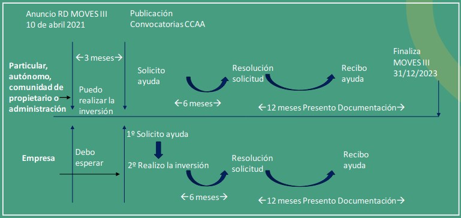

Guía para acceder a las ayudas del plan MOVES III (Ayudas para instalaciones de recarga)¶
¿Qué es el programa MOVES III?
Es un programa de incentivos a la compra de vehículos eléctricos y a la instalación de puntos de recarga
¿Cuál es su presupuesto?
El programa cuenta con un presupuesto inicial de 400M€, con posibilidad de ampliarse en los próximos años en caso de existir suficiente demanda hasta 800M€
¿Dónde puedo encontrar información más detallada?
En la página web MOVES III del IDAE: MOVES III.
¿Quién gestiona las ayudas?
IDAE coordina el programa y cada CCAA publica y gestiona sus convocatorias de ayuda MOVES III
¿Cómo puedo instalar un punto de recarga?
Puedo pedir ayuda si quiero instalar un punto de recarga de cualquier potencia destinado a los siguientes usos:
- Preinstalación en una comunidad de propietarios.
- Uso privado en sector residencial, incluidas las viviendas unifamiliares.
- Uso público en sector no residencial (aparcamientos públicos, hoteles, centros comerciales, universidades, hospitales, polígonos industriales, centros deportivos, etc.).
- Uso privado en zonas de estacionamiento de empresas privadas y públicas, para dar servicio a su propia flota.
- Uso público en zonas de estacionamiento de empresas privadas y públicas, para dar servicio a sus trabajadores y clientes.
- Uso público en vía pública, ejes viarios urbanos e interurbanos.
- Uso público en red de carreteras, siendo de especial interés la infraestructura de recarga en estaciones de servicio y gasolineras.
¿Qué ayuda puedo recibir?
| Destinatarios últimos (Artículo 11.1) | Localización general | Municipios <5.000 hab. |
|---|---|---|
| Autónomos, particulares, Comunidades de Propietarios y administración sin actividad económica | 70% | 80% |
| Empresas y entes públicos con actividad económica, recarga acceso público y P ≥50kW | 35% (45% Mediana empresa) (55% Pequeña empresa) | 40% (50% Mediana empresa)(60% Pequeña empresa) |
| Empresas y entes públicos con actividad económica recarga acceso privado o acceso público con P <50kW | 30% | 40% |
¿Cuál es el límite de ayuda que puedo recibir?
Particulares: 5.000€/expediente y convocatoria para recarga vinculada
Empresas, administración, Comunidad Propietarios: 800.000€/expediente, con un máximo de 2,5 M€ por convocatoria Autónomos: limite establecido por el reglamento de minimis. La cuantía de la subvención o ayuda acumulada que haya percibido por el concepto de minimis en el ejercicio actual y en los dos ejercicios anteriores, no podrá exceder de la cantidad de 200.000 euros.
Para el caso de autónomos que realizan operaciones por cuenta ajena de transporte de mercancías por carretera (epígrafe 722 del IAE), límite de 100.000 euros.
Aviso. Dicho Reglamento no permite acceder a las ayudas para la instalación de puntos de recarga a los autónomos dados de alta en las siguientes actividades:
- Producción, transformación y comercialización de productos de la pesca y de la acuicultura.
- Producción primaria de productos agrícolas;
¿Qué se incluye en el coste subvencionable?
-
El proyecto, la obra civil, los costes de ingeniería y dirección de obra, el coste de la propia infraestructura de recarga, la instalación o actualización de cualquier elemento eléctrico, incluido el transformador, trabajos de conexión a la red de distribución, centros de seccionamiento y transformación y acometida de media tensión, necesarios para conectar la infraestructura de recarga a la red o a la unidad de producción o almacenamiento local de electricidad, la adecuación de terrenos o carreteras, los costes de instalación y costes por permisos relacionados y necesarios.
-
Los costes de la unidad de producción renovable o almacenamiento local para generar o almacenar la energía eléctrica, caso de existir, serán elegibles únicamente si están exclusivamente dedicados al punto de recarga y se pueden considerar parte de la estación de recarga, no estando conectados a la red.
-
El sistema de pago integrado en la estación de recarga, la señalización de las estaciones de recarga y el sistema de gestión, control y seguridad, así como las instalaciones de telecomunicaciones necesarias.
-
En el caso de aparcamientos o estacionamientos colectivos en edificios existentes de régimen de propiedad horizontal, será actuación subvencionable la preinstalación eléctrica para la recarga de vehículo eléctrico que incluya una conducción principal por zonas comunitarias (mediante tubos, canales, bandejas, etc.), de modo que se posibilite la realización de derivaciones hasta las estaciones de recarga ubicadas en las plazas de aparcamiento, así como como instalaciones de telecomunicaciones, internet, 3G, 4G o sistemas similares que permitan garantizar una carga de vehículos inteligente.
¿Dónde tengo que solicitar la ayuda?
A través del aplicativo que disponga mi comunidad autónoma en su web. Puedo encontrarme dos situaciones según indique la convocatoria de mi CCAA
- Tendré que solicitar la ayuda directamente
- Tendré que solicitar la ayuda a través de una entidad colaboradora. Será mi CCAA la que indique qué empresas son entidades colaboradoras.
¿Cuándo puedo realizar la instalación?
Si soy un particular, autónomo, comunidad de propietarios o administración sin actividad económica:
- Puedo realizar la instalación desde el 10 de Abril (fechas de factura y justificantes de pago)
- Una vez que mi CCAA publique su convocatoria y según se establezca, debo tramitar mi solicitud de ayuda directamente o solicitar que la tramite la entidad colaboradora (instalador)
Si soy una empresa o administración con actividad económica:
- Debo esperar a que mi CCAA abra su convocatoria para tramitar mi solicitud de ayuda.
- Tras el registro de mi solicitud, puedo realizar la instalación (facturas, contratos y justificantes de pago)
Las CCAA publicarán sus convocatorias entre junio y julio de 2021. Tendré de plazo para solicitar la ayuda hasta el cierre de vigencia del programa (31/12/2023)
¿Qué documentos necesito para solicitar la ayuda?
Particulares y Autónomos
- Fotocopia DNI/NIE del particular solicitante de la ayuda
- En el caso de autónomos, aporte de Certificado de alta en el Censo de Empresarios, Profesionales y Retenedores*
- Certificado de estar al corriente con obligaciones tributarias y SS (si ayuda solicitada >10.000€)* Declaración responsable de estar al corriente con obligaciones tributarias y SS (ayuda≤ 10.000 €)
- Declaración responsable no concurrencia circunstancias artículo 13, apartados 2 y 3, Ley 38/2003, según modelo que se facilite en la convocatoria.
- Declaración de que no se dispone de otras ayudas para la misma actuación o bien bajo el régimen de minimis en los últimos 3 años, según modelo que se facilite en la convocatoria.
- Memoria descriptiva de la instalación
Empresas y Comunidades de propietarios
- Fotocopia NIF de la empresa/comunidad de propietarios Documentación acreditativa de las facultades de representación de la persona representante de la entidad
- Declaración responsable de condición de Pequeña, Mediana o Gran Empresa, o en su caso si se trata de una entidad sin actividad económica*
- Certificado de estar al corriente con obligaciones tributarias y SS (ayuda >10.000€) *
- Declaración responsable de estar al corriente con obligaciones tributarias y SS (ayuda≤ 10.000 €) *
- Declaración responsable no concurrencia circunstancias artículo 13, apartados 2 y 3, Ley 38/2003,según modelo - que se facilite en la convocatoria.
- Declaración de que no se dispone de otras ayudas para la misma actuación, por incompatibilidad de ayudas
-
Memoria descriptiva de la instalación
Mi CCAA puede permitir en su convocatoria que autorice a que consulten los documentos marcados con * y puede solicitar documentación adicional
¿Qué tengo que presentar para justificar la inversión y recibir la ayuda?
- Memoria técnica o proyecto de la instalación realizada si así lo requiere (según REBT)
- Ubicación de los sistemas de recarga, referencia de estos en un plano, indicando dirección, número y coordenadas GNSS (estas últimas sólo si el punto es de acceso público)
- En caso de ubicarse en un municipio de menos de 5.000 habitantes, mi CCAA podrá requerir que lo acredite.
- Facturas detalladas, de manera que puedan identificarse los conceptos objeto de ayuda y el destinatario último
- Documentos justificativos del pago de las facturas de compraventa imputadas donde se pueda identificar al destinatario último, al receptor y la fecha de pago
- Copia de contrato de suministro de los bienes y/o servicios objeto de ayuda
- Copia de certificado de instalación eléctrica
- Certificación que acredite los datos bancarios para transferencia del importe de la ayuda
¿Cuál es el calendario del Plan MOVES III?
- Presentación del Plan MOVES III el 9 de abril de 2021, particulares, autónomos, comunidades de propietarios y administración sin actividad económica pueden iniciar la inversión a partir de esa fecha.
- Publicación del real decreto en el BOE el día 14 de abril de 2021
- Las CCAA deben publicar sus convocatorias antes del 14 de julio de 2021
- Convocatorias abiertas para admitir solicitudes hasta el 31 de Diciembre de 2023
- Desde que presento mi solicitud, en un máximo de 6 meses recibiré la resolución
- Dispongo de un máximo de 12 meses para presentar la documentación que justifique mi compra
- La CCAA analizará la documentación presentada y recibiré mi ayuda

Ejemplo de caso singular: Preinstalación en comunidad de propietarios o recarga vinculada a través de un operador o empresa de servicios de recarga
La comunidad de propietarios o el particular contrata la preinstalación o punto de recarga vinculada con la empresa de servicios, que asume la inversión, operativa y titularidad de la instalación.
- El destinatario último será la empresa de servicios, al que se emite una factura y justifica unos pagos a la empresa instaladora.
- La ayuda que le corresponde dependerá del tamaño de la empresa y ubicación de la instalación
- La solicitud de ayuda la debe realizar la empresa de servicios
Ejemplo de caso singular: Punto de recarga en mi domicilio facilitado con la compra de mi vehículo
Algunas empresas (puntos de venta o empresas para sus empleados) se han planteado invertir ellos mismos en la infraestructura de recarga con el fin de fomentar la adquisición de vehículos eléctricos. Estas empresas podrían acogerse al plan MOVES III, siendo ellas las destinatarias últimas, aunque el punto de recarga se encuentre en mi domicilio. Para ello:
- La empresa es quien realiza la inversión, adquiriendo a un tercero el punto de recarga y contratando la instalación del mismo.
- La empresa es a quien se factura el 100% de los gastos (equipo y los costes de instalación). Los justificantes de pago serán de la empresa al instalador.
- El contrato de cesión del punto de recarga entre empresa y usuario final se acordará entre las partes, pero no condiciona la ayuda.
- Se aconseja adjuntar una declaración responsable firmada por el usuario final de la instalación en la que acredite que es conocedor de la existencia de una solicitud de ayuda para dicha instalación a nombre del solicitante (empresa).
- La ayuda que le corresponde a la empresa será del 30% del coste elegible o del 40% si la ubicación del punto de recarga vinculado fuera en un municipio de < 5.000 hab.
Enlaces de interés
- Página web IDAE MOVES III (Preguntas frecuentes, información convocatorias, seguimiento)
- Consultas a través de Servicio de información a la ciudadanía del IDAE, SICER
Teléfono: 913 146 673 (de 10:00h a 14:00h, L-V) Correo electrónico: ciudadano@idae.es
Ayudas MOVES III¶
Guía para acceder a las ayudas para instalaciones de recarga